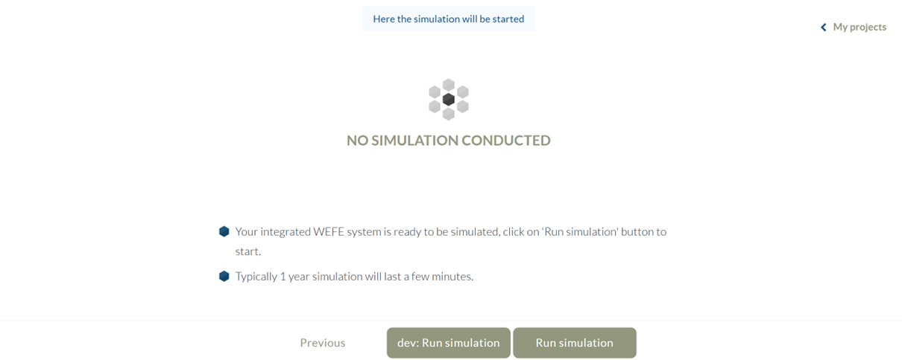

<main>
    <div>
        <p>
            In the next step, “Simulation”, and after having collected site-specific data, modeled demand curves,
            and defined the optimization priorities, the integrated WEFE system is ready for simulation over
            a 1-year period and parallel optimization. The simulation and optimization start by clicking
            “Run simulation” and currently requires 2 to 10 minutes to finish, depending on the complexity
            of the set of integrated WEFE system layouts. This complexity depends primarily on the number and
            type of water, energy, sanitation, and food components indicated in the technical survey.
            The web app is still in an early stage of development. In the current version, only a few combinations
            of WEFE components are feasible for successful simulation and optimization.
            Debugging, testing, validation, and development of new components and interactions are ongoing.
            In case the designed integrated WEFE system is not feasible,
            clicking “dev: Run simulation” runs a functioning default scenario for testing purposes.
        </p>
                <p>
            
        </p>

    </div>

</main>
